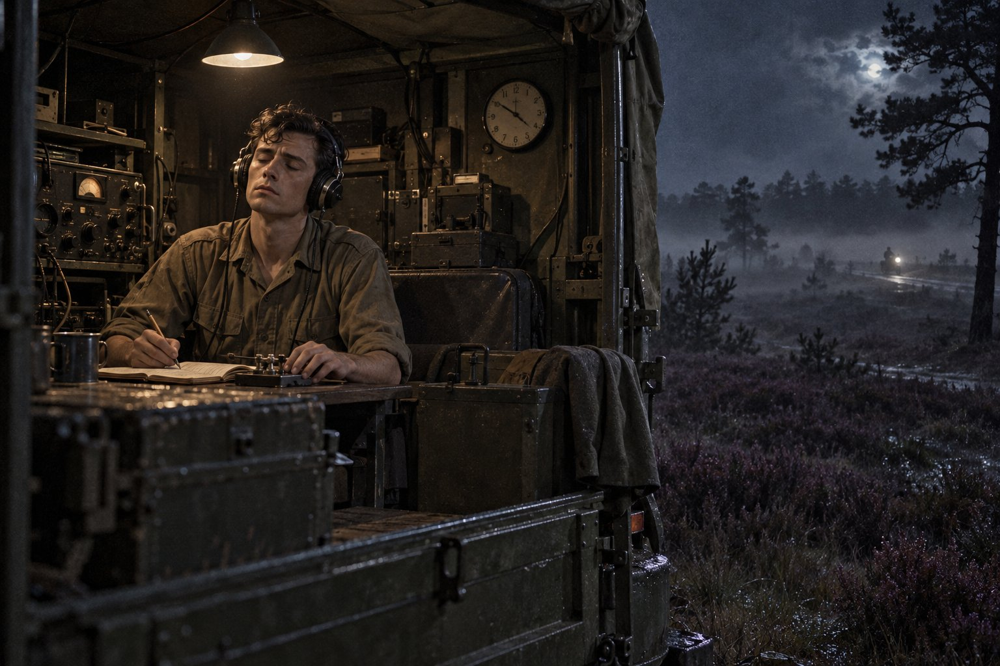

Позывной

Глава первая
Нет языка, и нет наречия, где не слышался бы голос их.
— Псалом 18:4
Из всех способов попасть на континент армейский был самым неудобным и самым надёжным: неудобным, потому что армия никогда не спрашивала, удобно ли тебе, а надёжным, потому что армия, однажды решив, что ты должен оказаться в Германии, доставляла тебя туда с той же неумолимостью, с какой почта доставляет счета. Рядовой Морс, выпускник курса шифровальщиков Каттерика, один из четырёх, дошедших до конца из семнадцати, ехал в Германию в мае 1960 года, с вещмешком, с предписанием в нагрудном кармане и с «Островом сокровищ» на дне мешка, под запасными носками. Это была та самая книга, по которой он в Каттерике прочёл цифры мёртвого товарища и которую Бренда Холлис отказалась взять назад, и Морс спрятал её так, чтобы её не увидел никто, кто стал бы задавать о ней вопросы.
Ночь он провёл на пароходе из Хариджа в Хук-ван-Холланд, на палубе, потому что внизу, в трюмных кубриках, где на подвесных койках спали триста солдат, пахло так, как пахнет только там, где триста солдат спят после пива, выпитого в Харидже на прощание с Англией. Морс пива не пил. Для армии это было обстоятельство важнее вероисповедания и группы крови, и встречали его с тем же недоверием, с каким встречают человека, который отказывается от сигареты не потому, что бросил, а потому, что никогда не начинал.
На палубе кто-то оставил вчерашнюю газету, и Морс читал её при свете фонаря над шлюпкой, пока ветер не начал вырывать страницы. Газета была полна одной историей. Первого мая, в день, когда в Москве по Красной площади шли демонстрации, над Уралом сбили американский самолёт, летевший так высоко, что его считали недосягаемым. Американцы сначала сказали, что это была метеорологическая машина, сбившаяся с курса. Потом Хрущёв сообщил, что лётчик жив, сидит в Москве и рассказывает, и что на борту нашли фотоаппараты, снимавшие советские аэродромы. Через неделю в Париже должны были встретиться четверо: Эйзенхауэр, Хрущёв, Макмиллан и де Голль, и газета гадала, состоится ли встреча вообще, и если состоится, то о чём на ней будут говорить, кроме самолёта.
Нельзя сказать, что Морс в ту ночь много думал о самолёте. Он думал о том, что лётчик, по словам газеты, должен был в случае неудачи уничтожить машину вместе с аппаратурой и не уничтожил, и что, видимо, ни в одной армии мира не умеют составить приказ так, чтобы человек, которому предстоит его выполнить, нашёл в нём причину это сделать. Потом он подумал, что в Каттерике его учили уничтожать шифровальные таблицы при угрозе захвата и что учили так же, по пунктам, и что ни один пункт не объяснял, что делать, если угроза захвата приходит не снаружи, а изнутри. Потом пароход качнуло, и он перестал думать вообще.
В Хуке их построили на пристани, пересчитали, сверили со списками, пересчитали снова, потому что одного не хватало и потом он нашёлся в уборной, и посадили в длинный воинский поезд с деревянными скамьями. Поезд шёл через Голландию на восток весь день, мимо полей таких плоских, что Линкольншир рядом с ними показался бы гористым, мимо каналов, мельниц и велосипедистов, ехавших вдоль путей с такой невозмутимостью, как будто воинские поезда были для них частью пейзажа, вроде коров. Вероятно, так оно и было. Пятнадцать лет назад по этим же путям шли другие поезда, в другую сторону, с другими солдатами, и голландцы видели на своём веку достаточно солдат, чтобы перестать на них смотреть.
Границу переехали к вечеру. Морс ожидал, что заметит её, что Германия будет выглядеть как-то иначе, по-немецки, как в кино про войну, но поля были те же, только дома стали выше и черепица темнее, а надписи на станциях длиннее. Он знал по-немецки столько, сколько знает человек, прочитавший в шестом классе одного Гёте со словарём и один раз слушавший «Тристана» с либретто на коленях: много существительных, мало глаголов и ни одного слова, которое можно было бы сказать продавщице в лавке. Он подумал, что за два года это нужно исправить, и подумал он это с решимостью, которая обычно сопровождает новогодние обещания.
На станции в Мёнхенгладбахе было уже темно. Тех, кто ехал в штаб, высадили, построили и передали капралу с фонарём и списком. Капрал шёл вдоль строя, светил каждому в лицо, спрашивал фамилию и ставил галочку. Дойдя до Морса, он посветил, спросил фамилию, услышал её, посветил в список, потом снова в лицо, и на лице его появилось выражение человека, которому показали знаменитость, о которой он слышал и которую представлял себе иначе.
— А, — сказал капрал. — Так это ты Профессор.
Как прозвище, данное Морсу в бараке Каттерика, пересекло Северное море раньше него, объяснить трудно. Армия обладает собственной почтой, которая не значится ни в одном уставе и работает быстрее, чем полевая, и по этой почте путешествуют прозвища, репутации, слухи о новых старшинах и сведения о том, у кого в роте можно занять до получки. Морс почувствовал, как у него горят уши, и порадовался, что темно. Он надеялся, что в Германии начнёт жизнь сначала, без прозвищ. Он не учёл, что начинать жизнь сначала в армии нельзя: можно только продолжать её на новом месте.
Рейндален он увидел наутро. Это был город, построенный за два года на песке и сосняке к западу от Мёнхенгладбаха, весь из одинакового тёмно-красного кирпича, с казармами, штабными корпусами, офицерскими коттеджами, церквами, школой и кинотеатром, с улицами, названными в честь английских графств, и с той особенной чистотой, какая бывает только там, где за каждым квадратным ярдом закреплён ответственный. Здесь помещались штаб Рейнской армии, как со времён войны называли британские войска в Германии, и штаб Северной группы армий НАТО, и десять тысяч человек, говоривших по-английски, жили тут так, словно Германия была за забором, и, строго говоря, так оно и было.
Узел связи штаба был под землёй, в подвале одного из корпусов, за стальной дверью с глазком и часовым. Морса провели мимо первого зала, где в два ряда стучали телетайпы и телеграфисты в рубашках с закатанными рукавами отрывали ленты, во второй, за ещё одной дверью. Там было тише, светлее и душнее, на стене висели большие круглые часы, показывавшие гринвичское время, а за столами сидели люди, которые подняли головы, посмотрели на новичка и опустили их снова. Ни один из них не спросил его, Профессор ли он. Шифровальщики, как он скоро узнал, вообще ни о чём не спрашивали, если ответ можно было узнать, не спрашивая.
Глава вторая
Даже и в мыслях твоих не злословь царя, и в спальной комнате твоей не злословь богатого; потому что птица небесная может перенести слово твое, и крылатая — пересказать речь твою.
— Екклесиаст 10:20
В первую неделю Морсу не доверили ничего, кроме журнала. Журналов во втором зале было несколько, и в каждый вписывалось всё, что можно было вписать: номер телеграммы, время по Гринвичу, отдел-получатель, фамилия того, кто раскрыл, и фамилия того, кто расписался в получении, так что любая бумага, прошедшая через подвал, оставляла за собой след длиннее себя самой. Морс вписывал, сверял и прислушивался, и, по правде говоря, прислушивался больше, чем сверял.
Шифровальщики работали в три смены, и смена, в которую попал Морс, принадлежала штаб-сержанту Леонарду Крофту. Иначе, чем «принадлежала», о ней и не скажешь: Крофт владел сменой, как добродушный фермер владеет стадом, знал каждую голову по имени и ни на минуту не сомневался, что всё это его. Это был большой, румяный, весёлый человек лет под сорок, с золотым зубом, который показывался, когда он смеялся, а смеялся он часто, и с привычкой хлопать младших по плечу так, что младшие слегка приседали. В сержантской столовой он был душой компании, по пятницам играл в карты до утра, и про него говорили, что он даст взаймы последний фунт и забудет спросить обратно. Это говорил не один человек, а многие, и это была правда. Только человек, который забывает спросить свои долги, часто забывает и отдать чужие, и обе эти забывчивости растут из одного корня.
— Профессор, — сказал он Морсу в первое же утро и хлопнул его по плечу так, что Морс невольно присел. — Наслышан. Четверо из семнадцати, а? Ну, у нас тут семнадцать из семнадцати, так что не задирай нос. Учёность тут ни к чему. Тут нужна аккуратность и чтобы спина не болела.
Морсу он понравился. Нет ничего странного в том, что молодой человек, выросший рядом с холодным отцом, с первого дня потянулся к тёплому начальнику, и нет ничего странного и в том, что некоторое время он не замечал, что тепло и доброта — разные вещи. Крофт не мучил новичков, не придирался к пуговицам и не громыхал на всю смену, когда кто-нибудь ошибался в группе цифр. Он брал телеграмму, смотрел, вздыхал и переделывал сам, и напевал при этом что-нибудь из музыкальных комедий, и виновнику от этого было хуже, чем от любого крика.
В понедельник, шестнадцатого мая, в Париже собрались четверо, о которых Морс читал на пароходе. Хрущёв потребовал, чтобы американский президент извинился за самолёт, Эйзенхауэр извиняться не стал, и на этом первом заседании всё и кончилось: второго не было, хотя Макмиллан ещё несколько дней ездил от одного посольства к другому, как человек, который ищет по карманам ключ от двери, давно уже закрытой изнутри.
В подвале Рейндалена об этом узнали не из газет. Телеграммы той недели шифровали не для того, чтобы их потом пересказывали. Довольно того, что лент стало вдвое больше, что ночная смена оставалась на дневную, а дневная на ночную, и что в одну из этих ночей Крофт, глянув на часы и на корзину нераскрытых лент, сказал «ну-ка, Профессор, покажи свои четыре из семнадцати» и посадил его за машину.
Описывать машину не положено, а тому, кто не служил в войсках связи, это было бы и неинтересно. Достаточно сказать, что на вход в неё подавалась бессмыслица, а на выходе получался смысл, и что смысл этот печатался на узкой бумажной ленте, которую потом наклеивали на бланк, как наклеивают телеграммы на почте, и что человек, сидящий посередине, должен был делать своё дело, не читая смысла, как наборщик в типографии не читает книгу, которую набирает. Морс смысл читал. Он делал это не нарочно, потому что не читать то, что написано, он вообще не умел, с тех самых пор, как в четыре года прочёл вывеску над лавкой страхового агента на углу и спросил мать, от чего страхуют.
Работал он медленнее стариков и не ошибся ни разу. Крофт взял его бланки, просмотрел, засмеялся, показав золотой зуб, и сказал на весь зал, что наконец-то в смене появился человек, который не путает пятёрку с восьмёркой, и что теперь он, Крофт, может с чистой совестью умереть. Потом он снова хлопнул Морса по плечу, и Морс снова присел под его рукой.
Утром, когда смена кончилась и они поднялись из подвала в серый дождливый свет, Крофт остановился на крыльце, закурил и сказал, глядя на мокрый плац, что в сорок четвёртом он думал, что уж теперь-то всё, последняя война, а вот пожалуйте. Морс подумал, что сейчас он услышит что-то важное, и приготовился слушать. Но Крофт докурил, бросил окурок, аккуратно затоптал его и спросил, играет ли Профессор в карты. Морс сказал, что нет. Крофт сказал, что так и думал, и что это, пожалуй, самое умное, что он слышал за неделю.
Было ли это сказано всерьёз, осталось неясным. Через полтора года Морс вспомнит эти слова и так и не решит, что в них было больше, шутки или совета.
Глава третья
При многословии не миновать греха, а сдерживающий уста свои — разумен.
— Притчи 10:19
Сержант Томас Гилкрист прибыл в Рейндален в июне, в такую жару, когда даже в подвале становилось душно по-летнему, и нельзя сказать, чтобы его прибытие кто-нибудь заметил. В том и состояло его искусство. Он спустился в подвал на смену Крофта в восемь утра, поздоровался, сел за свободный стол, и к полудню всем казалось, что он сидит там лет десять, а к концу недели так оно, в сущности, и было, потому что такие люди, как Гилкрист, не столько приезжают на новое место, сколько обнаруживаются там, как обнаруживается на своём месте грузило часов, которого никто не видел, но без которого часы не шли бы.
Гилкрист был шотландец из Данди, лет тридцати пяти, невысокий, сутулый, с рыжеватыми бровями и тихим голосом, и служил в связи с конца войны, когда девятнадцатилетним мальчиком попал шифровальщиком на Мальту. Он не пил, не курил, по воскресеньям ходил в гарнизонную шотландскую церковь, а по вечерам писал длинные письма жене в Данди, мелким ровным почерком, без единой помарки, и Морс подозревал, что он и письма эти сначала составляет в уме, как телеграмму, а потом только переписывает набело. Жена и двое детей остались дома, потому что квартир для семейных сержантов в Рейндалене на всех не хватало, и очередь двигалась с той скоростью, с какой двигается всякая армейская очередь, то есть без видимых причин и скачками.
То, что Морс тоже не пил, сблизило их в первую же неделю. Морс дал себе слово не пить летом 1959 года, в Оксфорде, после ночи, о которой он не любил вспоминать, и слово это держалось. В армии держать его было труднее, чем в колледже, и в Рейндалене труднее, чем в Каттерике, потому что немецкое пиво стоило дешевле английского чая, а человек, который от него отказывался, выглядел в глазах сослуживцев либо больным, либо скупым, либо сектантом. Морс был благодарен Гилкристу за то, что тот ни разу не спросил его, почему, и сам не спросил Гилкриста о том же. На таком взаимном нелюбопытстве держится больше мужских дружб, чем принято думать.
Крофт называл Морса Профессором. Гилкрист с первого дня стал называть его Оксфордом, и разница тут была немалая. Профессор был тем, кем Морс казался; Оксфорд был тем, откуда он пришёл, и в этом было что-то от военного обычая называть людей по их полку или по их кораблю. Насмешки в этом не было. А если была, то насмешка над Оксфордом, а не над Морсом, и Морс с ней не спорил.
Именно Гилкрист научил его главному правилу узла связи, о котором на курсах в Каттерике говорили вскользь, словно о чём-то само собой разумеющемся, а в подвале о нём говорили каждый день, потому что каждый день его кто-нибудь нарушал. Случилось это ночью, когда смена была тихая, Крофт дремал в своём углу, а Морс, отдав получателю телеграмму из Лондона, спросил, почему ему велели выдать её не как есть, а переписанной другими словами.
— Видишь ли, Оксфорд, — сказал Гилкрист, не поднимая головы, — шифр ломают не математики. Шифр ломают дураки на нашей стороне. Вот приходит телеграмма шифром. Мы её раскрываем. Получается текст, допустим, двести слов. И какой-нибудь майор в штабе отдаёт этот текст машинистке, машинистка печатает семь копий, копии расходятся по кабинетам, и одна из них, слово в слово, попадает к кому не надо. А у того, кому не надо, лежит на столе та же телеграмма в шифре, как она шла по эфиру, потому что эфир слушают все. Он кладёт одно рядом с другим и получает даром то, за что в мирное время платят годами работы: кусок открытого текста, точно совпадающий с куском шифра. Дальше дело техники. Поэтому мы никому ничего не отдаём слово в слово. Каждый получатель получает пересказ. Своими словами, другим порядком, без лишнего. Смысл тот же, буквы другие.
— А если получателей несколько, — сказал Морс, — то у каждого свой пересказ?
— У каждого свой, если по уму. По уму у нас бывает не всегда. Но я стараюсь.
Морс, слушая это, почувствовал странную неловкость, как будто его застали за чем-то давно забытым. Он уже слышал однажды, от другого человека и в другой комнате, что текст можно передать слово в слово и солгать, и никак не ожидал услышать в подвале военного штаба обратное: что иногда единственный способ сказать правду — это не повторять ни одного слова. Он подумал, что доктор Пенхаллоу оценил бы это правило, и подумал это в прошедшем времени, как о покойнике думать ещё не привык.
Когда поток перед рассветом совсем стих, Гилкрист сделал то, чего Морс от него не ожидал. Он подошёл к телетайпу на служебной линии с Берлином, той, по которой смены переговаривались между собой о своих делах, и отстучал всего несколько знаков. Через минуту машина ожила и отстучала ему в ответ тоже несколько знаков. Гилкрист оторвал ленту, посмотрел на неё, и на лице его появилось выражение, какого Морс ещё не видел: почти мальчишеское.
— Доуз, — объяснил он. — Сержант Доуз, в Берлине. Мы с ним вместе учились. Он там с прошлой зимы. Ходит конём на эфцетри, дурак. Я ему сейчас покажу.
Сержант Гилкрист, не прослужив в Рейндалене и недели, успел начать с берлинским узлом связи шахматную партию по служебной линии, по одному ходу за смену. Это было нарушением правил, но таким, на которое начальство смотрело сквозь пальцы, и человек, ни разу в жизни не нарушивший правила пересказа, с лёгким сердцем нарушал другое, мелкое, и Морсу это понравилось в нём больше всего. Люди без единой слабости всегда казались ему подозрительными, и вряд ли он в этом ошибался.
Глава четвёртая
В полу бросается жребий, но все решение его — от Господа.
— Притчи 16:33
В хор гарнизонной церкви Морс попал так же, как четыре года назад попал в хор колледжской часовни, и по той же причине, которая не имела ничего общего с верой. Он не верил в Бога лет с двенадцати, но петь любил и до сих пор не нашёл другого места, где человеку без денег и без связей разрешали бы петь Баха. Регент был из сержантов-интендантов, любил Хенделя сильнее, чем Баха, а порядок сильнее, чем Хенделя, и принял Морса в тенора, выслушав одну фразу и сказав, что тенора в армии редкость, как и всё остальное, что чего-нибудь стоит.
Басов в хоре было четверо, и лучшим из них был ефрейтор Дэнни Колвилл, мотоциклист-посыльный1 из того же полка связи. Радио слушали все, а сумку посыльного — никто, и потому самое секретное до сих пор возили так.
Колвиллу было двадцать лет, он был родом из Ливерпуля, отслуживал свои два года по призыву и пел так, как поют люди, выросшие в церковном хоре и покинувшие его ради мотоциклов: без усилия, верно и с видом человека, который думает о карбюраторе. Он был широк, веснушчат, негромок и нетороплив, и неторопливость покидала его, только когда он садился в седло. По воскресеньям после службы он исчезал в сторону Вегберга, небольшого городка к западу от гарнизона, и все знали, что там, в деревне неподалёку, живёт девушка по имени Трудель, которая работает в пекарне своего отца, и что у Трудель есть старший брат, которому это не нравится.
Морс и Колвилл стояли на спевках рядом, потому что регент ставил теноров перед басами, и Колвилл на вторую же спевку понял в Морсе то, чего не понимали в нём люди поумнее: что новенький из Оксфорда слышит неверную ноту так, как другие чувствуют камешек в ботинке. В самом деле, когда кто-нибудь из теноров сползал на четверть тона, Морс вздрагивал всей спиной и втягивал голову в плечи, словно ему наступили на ногу, и Колвилл за его спиной тихо смеялся. После третьей спевки он сказал, что в пятницу в капральской столовой играют в карты, что сам он не играет, но ходит смотреть, потому что там можно увидеть фокус, какого Морс нигде не увидит, и что фокус этот как раз для таких, как они двое, с ушами.
Капральская столовая в пятницу вечером была не тем местом, куда рядовому следовало ходить, и именно поэтому туда ходили рядовые. Играли в дальнем углу, за столом, накрытым армейским одеялом, в какую-то разновидность покера, правил которой Морс так и не усвоил, и ставки были в марках и в армейских бонах, а иногда, когда деньги кончались, в расписках на листках, вырванных из записной книжки. За столом сидели пятеро. Одним из них, к удивлению Морса, был штаб-сержант Крофт, которому в капральской столовой было так же не место, как и рядовым, только с другой стороны. Другим был долговязый, светловолосый, совсем ещё мальчишеского вида рядовой по фамилии Эйнсли, радист, совсем недавно присланный из Каттерика. А банк держал капрал Рэй Мэддокс.
О капрале Мэддоксе нужно сказать как следует, потому что сам он представлялся всему свету именно так. Это был худощавый аккуратный человек лет тридцати, кадровый, с узкими усиками, в старших радистах радиовзвода штаба с незапамятных времён, с лёгкими пальцами, которые сдавали карты так же, как работали на ключе, быстро и без лишнего движения. Он не пил за игрой, не повышал голоса, не радовался выигрышу и не огорчался проигрышу, и в конце каждой пятницы у него в жестянке из-под табака собирались чужие расписки. Никто из сидевших за столом не любил Мэддокса, и все они приходили снова.
Фокус, ради которого Колвилл привёл Морса, показал Эйнсли, когда его выбили из игры. Он взял со стола чайную ложку и, стуча ею по краю жестяной пепельницы, передал азбукой Морзе одно и то же короткое слово три раза подряд, и радисты за соседними столами засмеялись и стали называть фамилии. Морс, который до отбора на курс шифровальщиков прошёл в Каттерике курс телеграфиста и морзянку читал на слух, хоть и не быстро, разобрал слово с первого раза и не понял, чему смеются. Тогда Колвилл нагнулся и объяснил ему на ухо.
Одно и то же слово Эйнсли передал трижды тремя разными руками. Первый раз так, как передаёт капрал из соседней радиостанции, тяжело, с нажимом на каждом тире; второй — так, как передаёт начальник их взвода, всё в одну кашу; третий — так, как передаёт сам Мэддокс, и Мэддокс за столом поднял глаза от карт и на секунду едва заметно улыбнулся. У каждого радиста, сказал Колвилл, свой почерк, как у тебя на бумаге, и старые радисты знают друг друга по почерку лучше, чем в лицо. А Эйнсли умеет писать чужим почерком. С первого раза снимает, как обезьяна.
Уже уходя, у двери, Морс обернулся и увидел, как Мэддокс, поднявшись из-за стола, нагнал Колвилла в коридоре и протянул ему сложенный вчетверо конверт, а Колвилл, не глядя на него, покачал головой и пошёл дальше, и Мэддокс постоял с конвертом в руке и спрятал его в карман так неторопливо, как прячут вещь, которая ещё пригодится. Потом он увидел Морса и кивнул ему, вежливо, как кивают знакомому, с которым не знакомы.
Глава пятая
Можешь ли посылать молнии, и пойдут ли они и скажут ли тебе: вот мы?
— Иов 38:35
В сентябре штаб вышел в поле. Как назывались учения, неважно: название, как все названия учений, придумал человек, ничего не смысливший ни в поэзии, ни в военном деле. Из Рейндалена колонна шла полтора дня на северо-восток, в Нижнюю Саксонию, на Люнебургскую пустошь, где британские войска учились воевать с сорок пятого года, когда воевать уже было не с кем, и где за пятнадцать лет гусеницы танков нарезали в песке столько дорог, что их не было ни на одной карте.
Пустошь цвела. Морс, выросший в графстве, где ландшафт состоит из неба и свёклы, не был готов к тому, что целая равнина может быть лиловой, и первое утро смотрел на вереск из кузова грузовика с чувством, которое неловко называть в армии. Между вереском стояли редкие сосны и можжевельник, тёмный и колючий, и кусты можжевельника в тумане походили на людей, которые стоят и ждут. Солдаты говорили, что за первую ночь часовые окликнули не меньше дюжины кустов, и, возможно, так оно и было.
Штаб встал в сосняке, в грузовиках и палатках под маскировочными сетями. Шифровальщики работали в кузове одного грузовика, радисты в кузове соседнего, и между ними были протянуты провода и тропа, по которой бегали с бланками. В двенадцати милях к югу, у деревни с непроизносимым названием, стоял тыловой штаб, и при нём радиостанция капрала Мэддокса, с ним двое молодых, и один из них Эйнсли. Между штабами по ночам возили пакеты мотоциклисты, и одним из мотоциклистов был Колвилл.
На третью ночь в радиовзводе заболел один из ночных радистов, что на учениях случается чаще, чем в казарме, и кто-то вспомнил, что у шифровальщиков есть новенький, который прошёл в Каттерике курс телеграфиста. Крофт отпустил Морса с таким лицом, с каким фермер одолжает соседу лучшую лошадь, и сказал, что вернуть его нужно к семи утра живым и с целыми ушами.
Как устроена радиосеть и почему командира в ней зовут «Санрэй»2, Морсу объяснили ещё в Каттерике, и Морс нашёл в этом философию, а инструктор нашёл в Морсе умника и послал его чистить умывальники.
На дальней линии, между главным и тыловым штабом, по ночам работали не голосом, а ключом, азбукой Морзе, потому что морзянка пробивается там, где голос тонет в треске. Острить по поводу того, что человек по фамилии Морс в ту ночь принимал азбуку Морзе, незачем: за два года службы Морс слышал эту шутку от каждого, кто умел читать, и смеялся только первые два раза.
Он сидел в кузове радиомашины, в тяжёлых наушниках, под тусклой лампой, с бланком перед собой и карандашом в руке, и через откинутый брезент видел тёмную пустошь, туман над вереском и луну, которая то выходила из облаков, то пряталась. Трудной работа не была. Ночью по сети шло немного: сводки, запросы о горючем, списки больных, подтверждения того, что уже было подтверждено днём, потому что учения для того и устраиваются, чтобы по сети что-нибудь шло. Морс принимал медленнее настоящих радистов, иногда просил повторить группу, и станция тылового штаба повторяла терпеливо, как повторяют иностранцу.
О том, что случилось в ту ночь в наушниках, известно совсем немного, потому что и Морс тогда заметил совсем немного. Вскоре после полуночи станция тылового штаба передала длинную сводку, и до середины сводки на ключе там сидел человек, который передавал легко и немного насмешливо, чуть оттягивая последний знак в каждой группе, как человек, который досказав фразу, ещё секунду смотрит на собеседника. Потом станция замолчала минут на десять, а когда заговорила снова, под тем же позывным, тем же ходом, Морсу показалось, что насмешки в ней стало больше, чем нужно, как бывает с актёром, который переигрывает. Он подумал об этом ровно столько, сколько нужно, чтобы забыть, и записал в журнал время, как записывал его для каждой радиограммы: час десять по Гринвичу.
Мотоцикл на дальней дороге прошёл на юг около половины второго. Морс видел из кузова, как единственная фара плывёт по туману над вереском и исчезает за соснами, и знал, что за рулём Колвилл, потому что час назад видел его у полевой кухни с сумкой через плечо и Колвилл, дуя на кружку с чаем, сказал ему, что едет к Мэддоксу и что там, слава Богу, даже чаю не нальют. Пакет должен был прибыть в тыловой штаб через сорок минут. Туда он не прибыл.
Глава шестая
Ибо человек не знает своего времени. Как рыбы попадаются в пагубную сеть, и как птицы запутываются в силках, так сыны человеческие уловляются в бедственное время, когда оно неожиданно находит на них.
— Екклесиаст 9:12
В два часа сорок минут станция тылового штаба запросила станцию управления, выходил ли посыльный с пакетом, и Морс, приняв запрос и расписавшись в получении, передал его дежурному офицеру. На этот раз на ключе снова сидел человек, который оттягивал последний знак, и насмешки в его руке снова было ровно столько, сколько нужно. Морс этого не заметил. Он думал о запросе.
Дежурный офицер, молодой лейтенант, которого разбудили в палатке, сказал, что посыльные на учениях теряются каждую ночь, что на пустоши в тумане заблудиться проще, чем в собственной пижаме, и что к рассвету Колвилл найдётся, грязный, виноватый и с историей про кабана на дороге. Он велел ответить, что посыльный вышел около половины второго, и пошёл спать дальше. Осуждать его трудно: на его месте так сделали бы девять дежурных из десяти, а десятый не дослужился бы до лейтенанта.
Морс до семи утра принимал сводки и подтверждения, и в каждом перерыве смотрел через откинутый брезент на дальнюю дорогу, и дорога была пуста. Перед рассветом туман лёг на вереск так плотно, что пустошь стала похожа на море, а сосны на мачты затонувших кораблей (сравнение вычурное, но Морс подумал именно так), и ещё он подумал, что у него нехорошее предчувствие, и тут же рассердился на себя, потому что в предчувствия не верил.
В семь его сменили. У полевой кухни сержант, командовавший посыльными, собирал людей проехать по маршруту, и Морс, не спрашивая ничьего разрешения, забрался в кузов лендровера вместе с двумя мотоциклистами, и сержант посмотрел на него и ничего не сказал. Потом Морс узнал, что сержант пел в том же хоре баритоном и стоял на спевках слева от Колвилла, и подумал, что армия в сущности состоит из таких вещей, о которых никогда не пишут в уставах.
Нашли его на второй миле, там, где дорога, сделав прямой перегон по открытой пустоши, уходила в сосняк крутым поворотом налево. Это были те самые сосны, за которыми ночью скрылась фара. На повороте была канава, глубокая, с чёрной водой на дне, и в канаве лежал мотоцикл, а в двух ярдах от него, в вереске на откосе, лежал Колвилл, на спине, с лицом, повёрнутым к небу, и в такой позе, в какой живые люди не лежат. Каска была на нём, и на каске была вмятина, и сержант после первого взгляда сказал, что шея, и снял берет, и два мотоциклиста сняли береты вслед за ним, а Морс стоял с беретом в руке и не помнил, когда его снял.
Сержант сказал то, что сказал бы любой на его месте. Прямой перегон, туман, молодой парень, который знает дорогу и потому не думает о ней, скорость, которую на прямой все набирают, и поворот, который в тумане выходит на тебя раньше, чем ты на него. Он сказал это тихо, ни к кому не обращаясь, и уговаривал он, кажется, не слушателей, а себя, потому что это он послал Колвилла на этот маршрут.
Морс ничего не сказал. Он спустился в канаву к мотоциклу, не потому, что что-то заподозрил, а потому, что не мог больше смотреть на лицо на откосе, а многие открытия в истории сыска сделаны именно так, людьми, которые смотрели не туда, куда смотрели все, потому что туда, куда смотрели все, смотреть было страшно.
Мотоцикл лежал на боку, переднее колесо в воде. Сумка посыльного висела на нём, пристёгнутая, как полагается, и пакет в ней лежал нетронутый, с целой печатью. Морс посмотрел на руль, на фару, разбитую о край канавы, и на маленький рычажок света рядом с ней. Рычажок стоял на «выключено».
Он долго смотрел на него, и ничего из этого не следовало, потому что рычажок мог перескочить при падении, и мог не перескакивать, и Морс не знал о мотоциклах ничего, кроме того, что они громкие. Но он стоял ночью у откинутого брезента и видел, как одна фара плывёт по туману и скрывается за соснами, и теперь, стоя над канавой, вспомнил, что фара не вспыхнула, не дёрнулась и не метнулась в сторону, как мечется свет у человека, которого занесло. Она дошла до сосен, замедлилась и погасла, и в ту минуту он решил, что её заслонили деревья.
Ничего не следовало и отсюда. Но молодой человек, который стоит в сентябрьском тумане над разбитым мотоциклом с беретом в руке, не обязан думать логически, и хорошо, что Морс думал не логически, а упрямо. С логикой он договорится потом. А в то утро у него была только одна мысль, и мысль эта была простая: что Дэнни Колвилл ездил по этой дороге две ночи подряд и знал этот поворот лучше, чем фразу басов в «Мессии», которую им регент заставлял повторять каждую среду.
Глава седьмая
Не судите по наружности, но судите судом праведным.
— От Иоанна 7:24
К полудню на повороте побывали две полиции. Первой приехала немецкая, в зелёной форме, на бело-зелёной машине, потому что дорога была немецкая и канава тоже. Немецкие полицейские осмотрели канаву, записали что-то в блокнот, отдали честь телу и уехали. Мёртвый британский солдат в немецкой канаве был делом британским3, и немцы, кажется, не имели ничего против.
Вторая полиция приехала на чёрном «вольксвагене» и состояла из одного человека в сером гражданском костюме. Это был сержант Пирс из Особого следственного отдела королевской военной полиции4. Смертей на дорогах в Рейнской армии было больше всего, и сержант Пирс, судя по тому, как он осмотрел канаву, видел их столько, что мог бы описать эту, не выходя из машины.
Он был невысок, плотен, вежлив, и в его вежливости была та особая усталая вескость, с какой врач в приёмном покое говорит с пациентом, который прочёл медицинскую энциклопедию. К вечеру он вызвал в свою палатку по очереди сержанта посыльных, дежурного лейтенанта, двух мотоциклистов и Морса, потому что Морс принимал запрос тылового штаба и потому что, по словам сержанта посыльных, дольше всех стоял над канавой.
Морс рассказал про рычажок. Сержант Пирс выслушал, кивнул и сказал, что за десять лет видел не меньше сорока мотоциклов в канавах и что рычажки на них стояли как им вздумается, потому что мотоцикл, в отличие от человека, падает не один раз, а три или четыре, пока не успокоится. Морс рассказал, что фара перед соснами не метнулась, а замедлилась и погасла. Сержант Пирс сказал, что перед поворотом тормозят все, даже те, кто в него не вписывается, и что свет, если смотреть на него за две мили через туман, не мечется, а тает, что бы с ним ни случилось. Он спросил, не дружил ли рядовой Морс с покойным. Морс сказал, что они пели в одном хоре. Сержант Пирс кивнул так, словно это всё объясняло.
Дураком сержант Пирс не был. Человек он был неглупый и добросовестный, и всё, что он говорил, было правдой, и в сорока делах из сорока одного именно так всё и бывает. Беда сержанта Пирса, и всякого человека его ремесла, состояла в том, что сорок первое дело всегда приходит переодетым в сороковое.
Уже у выхода из палатки Морс увидел на складном столе опись вещей, найденных при покойном, напечатанную на машинке под копирку. Он прочёл её прежде, чем успел подумать, прилично ли это, потому что не читать написанное он не умел. Расчёска, семь марок и мелочь, фотография девушки в светлом платье, сложенная партитура басовой партии из «Мессии» с пометками карандашом. Последней строкой стояли мотоциклетные очки, и в скобках, с той точностью, которая ничего не стоит писарю и дорого обходится преступнику, стояло: «в нагрудном кармане куртки, целые».
Морс вышел из палатки и постоял на краю сосняка, глядя на пустошь, где среди вереска белели на солнце песчаные проплешины. Он не ездил на мотоцикле ни разу в жизни. Но ночью, когда на вереск ложился туман, он видел сам, как сидели на лицах у посыльных, вернувшихся с маршрута, их очки, мокрые, в каплях, с прилипшими мошками, и как посыльные сдирали их на лоб не раньше, чем глушили мотор. В туман без очков не ездит никто. А очки Дэнни Колвилла лежали сложенные у него в нагрудном кармане, целые, как кладут их туда люди, которые остановились, слезли с седла и собираются поговорить.
К вечеру сержант Пирс уехал. На следующий день стало известно, что в докладе он написал «несчастный случай, стороннее участие не установлено», а слово «установлено» в полицейских докладах всех стран означает не то, что чего-то не было, а то, что никто не стал этого искать.
Глава восьмая
Озлобившийся брат неприступнее крепкого города, и ссоры подобны запорам замка.
— Притчи 18:19
Учения кончились в срок, и через два дня штаб вернулся в Рейндален, в свои красные кирпичные корпуса, с тем выражением слегка пристыженного облегчения, с каким взрослые люди возвращаются с пикника, на котором кто-то утонул. Тело Дэнни Колвилла отправили в Англию, в Ливерпуль, к родным. В гарнизонной церкви отслужили по нему службу, и хор пел без одного баса, и регент, человек порядка, не стал ничего переставлять, так что на том месте, где стоял Колвилл, весь гимн стояла пустота, и Морс слышал её спиной.
После службы регент сказал, что хор подписал открытку для девушки из-под Вегберга и что надо бы кому-нибудь её отвезти, а не посылать по почте, и что он сам поехал бы, но не знает по-немецки ни слова, кроме тех, которые в церкви произносить нельзя. Морс сказал, что отвезёт. Двигало им не одно только сочувствие. У Морса были очки в нагрудном кармане и фара, которая замедлилась и погасла, и была фраза, сказанная в июне на спевке: что у Трудель есть старший брат, которому это не нравится.
В воскресенье он доехал до Вегберга на местном автобусе, а от Вегберга пошёл пешком, спрашивая дорогу на немецком, который сам себе казался сносным, пока не открывал рот. Крестьяне отвечали ему медленно, громко и с жестами, как отвечают детям и иностранцам, и на рядового британской армии в форме в этих местах, видимо, смотрели как на то и другое сразу. Деревня была в одну улицу, с кирпичной церковью, фахверковыми домами и пекарней, над дверью которой висел жестяной крендель. В воскресенье пекарня была закрыта, и Морс постучал в боковую дверь.
Дверь открыл брат. Как Морс понял, что это брат, а не отец и не сосед, неизвестно, но понял он это сразу, по тому, как невысокий крепкий мужчина лет под тридцать, с мукой на кулаках даже в воскресенье, оглядел его форму, стараясь не смотреть в лицо, и по тому, как не стал закрывать дверь, а просто встал в ней, заняв её целиком. Его звали Клаус. Морс в тот день не знал, что в сорок пятом году Клаусу было двенадцать лет, что в марте того года он сидел в погребе под этой самой пекарней, пока наверху шли союзные танки, и что танки эти были не английские, а американские, но для двенадцатилетнего мальчика в погребе все танки звучат одинаково.
Морс сказал, подбирая слова, что привёз письмо для фройляйн Трудель от хора, в котором пел Дэнни. Клаус протянул руку за открыткой. Морс открытки не отдал. Они постояли так, один с протянутой рукой, другой с открыткой за спиной, и неизвестно, чем бы это кончилось, если бы из глубины дома не сказали тихо «Клаус», и Клаус не посторонился.
Трудель была той самой девушкой в светлом платье с фотографии, только теперь в чёрном, и с лицом, на котором фотография уже не узнала бы себя. Она говорила по-английски лучше, чем Морс по-немецки, а именно так, как говорят люди, выучившие язык у одного человека, и Морс слышал в её английском ливерпульские гласные Дэнни Колвилла и не знал, куда деть глаза. Она прочла открытку, все двадцать две подписи, и спросила, какая из них его. Морс показал. Она сказала: «А, так это вы Профессор», и Морс услышал своё прозвище в третий раз за полгода, впервые от человека, которому оно стало известно по доброй воле.
Она рассказала немного. Что они с Дэнни собирались пожениться, когда он отслужит. Что в последнее воскресенье перед учениями он был не такой, как всегда, и сказал, что после учений сделает одну вещь, после которой с ним, может быть, перестанут здороваться, зато он сможет здороваться с её отцом. Что кто-то предлагал ему деньги, а он не взял. Кто и за что, он не сказал, сказал только, что это английские дела и что ему стыдно о них говорить.
На обратном пути Морс составил версию, и версия, надо признать, была скверная. Брат, который ненавидит англичан. Разговор, ради которого посыльный остановился бы на дороге. Немецкая машина, которая ночью на пустоши никому не бросилась бы в глаза, ибо дорога была немецкая. Оставалось лишь узнать, где был Клаус в ночь смерти Дэнни.
Узнать это оказалось проще, чем он думал, и намного неприятнее. В ту же среду, вернувшись в деревню в свой выходной, Морс зашёл в пивную напротив пекарни, спросил лимонаду и просидел с ним час под взглядами, пока хозяин, старик с пустым рукавом, заправленным за ремень, не сжалился над ним и не спросил, чего он ждёт. Морс спросил про ночь с среды на четверг прошлой недели. Старик долго смотрел на него, и потом сказал медленно и громко, как иностранцу, то, что знала вся деревня. Пекари работают по ночам. Клаус ставит тесто в половине первого, сажает первые хлебы в три, и окно пекарни светится на всю улицу каждую ночь, кроме субботы, уже десять лет, и в ночь со среды на четверг оно светилось точно так же, и господин солдат может спросить об этом любого, кто в пять утра стоял за булками. А до Люнебургской пустоши, прибавил старик, отсюда триста километров, и у Клауса нет даже мопеда.
Морс допил лимонад, заплатил, вышел на улицу и увидел в окне пекарни Клауса, который смотрел на него и не двигался. Они смотрели друг на друга через улицу, и потом Клаус медленно кивнул, как кивает человек, который давно знал, что из него сделают виноватого, и теперь лишь проверил, что не ошибся. Морс пошёл к автобусу и всю дорогу чувствовал этот кивок между лопатками.
Глава девятая
Сладок для человека хлеб, приобретенный неправдою; но после рот его наполнится дресвою.
— Притчи 20:17
Следующей находкой Морс обязан не своей проницательности, а Георгу Фридриху Генделю и любви регента к порядку. К Рождеству хор готовил отрывки из «Мессии», партии были переписаны и напечатаны на гектографе строго по числу певчих, и регент не мог допустить, чтобы партия басов уехала в Ливерпуль вместе с вещами покойного. Одну партию, ту, что была при Колвилле, военная полиция внесла в опись. Вторая, по сведениям регента, должна была лежать в его шкафчике в казарме, и послал он за ней того, кто уже однажды вызвался отвезти открытку.
Шкафчик стоял в конце длинной комнаты на двенадцать коек, и койка рядом с ним была уже заправлена по-сновому, с одеялом, сложенным квадратом, как заправляют койки, на которых никто не спит. Капрал, которому поручили собрать вещи Колвилла, дал Морсу ключ, сказал, что сам туда не полезет, пока не велят письменно, и ушёл курить на крыльцо. Шкафчик был как шкафчик: все солдатские шкафчики на свете содержат одно и то же, и неповторимы в них только фотографии на внутренней стороне дверцы. На дверце шкафчика Колвилла была Трудель и был большой мотоцикл, вырезанный из журнала, и трудно сказать, которую из двух любовей Дэнни считал серьёзнее.
Партия лежала на верхней полке, под беретом, несколько скреплённых листов в папке из серого картона. Морс взял папку, и из неё выпала на пол тоненькая книжечка в бумажной обложке, вроде тех, что выдают на почте. Морс не сразу понял, что это такое, потому что машины у него никогда не было и не предвиделось. В книжечке были талоны на бензин, по несколько галлонов каждый, и на обложке стояли фамилия, звание и номер машины. Фамилия была не Колвилла. Звание было лейтенантское.
Морс положил книжечку в карман. Четыре года назад, в другой стране и в другой комнате, при складывании вещей другого покойника Морс уже однажды спрятал во внутренний карман чужие бумаги, и тогда он прятал свои, а теперь чужие, и в этом можно увидеть известный нравственный рост, хотя и небольшой.
Вечером он показал книжечку Гилкристу. Они сидели на лестнице у запасного выхода из подвала, где в ночные смены можно было подышать воздухом через решётку, и Гилкрист долго вертел книжечку в пальцах, как вертят телеграмму с неправильным номером. Потом объяснил. Британские военные в Германии, у кого были собственные машины, получали бензин без немецкой пошлины, по талонам, около двадцати галлонов в месяц на маленькую машину, и галлон такого бензина был дешевле немецкого на два шиллинга с лишним. Талоны выдавали на машину, каждый месяц, пока машина числилась за владельцем. А этот лейтенант, сказал Гилкрист, если я не ошибаюсь, ещё весной уехал в Англию, а свой «моррис» продал здесь же, какому-то немцу. А талоны на его имя помечены августом.
— Значит, кто-то получает бензин на машину, которой нет, — сказал Морс.
— Значит, кто-то получает талоны на машину, которой нет, — поправил Гилкрист. — Бензин ему ни к чему. Талон стоит денег в любом гараже по ту сторону ворот. И чтобы талоны приходили каждый месяц, кто-то в канцелярии должен забыть вычеркнуть машину из списка. Забыть так, чтобы это потом выглядело как описка.
Масштаб преступления был скромный: речь шла о шиллингах, а не о секретах Атлантического союза, и люди, занятые такими делами, сами назвали бы их не воровством, а приработком. Но шиллинги, собранные с десятка несуществующих машин за два года, складываются в сумму, ради которой одни люди садятся на пять лет, а другие не хотят садиться ни на один день. А уголовное дело в армии для кадрового капрала или сержанта означало не только тюрьму, но и конец службы, пенсии и всего, что человек нажил за пятнадцать лет.
Морс рассказал про конверт, который Колвилл не взял. Рассказал про вещь, после которой с Дэнни, по словам Трудель, перестали бы здороваться. И спросил, что теперь делать с книжечкой.
Гилкрист помолчал. Над решёткой прошли чьи-то сапоги, и он дождался, пока они затихнут.
— Спрячь, — сказал он. — И никому не показывай, пока не будешь знать, кому показываешь. Тут как с телеграммой, Оксфорд. Если отдать её не тому получателю, она уже не твоя. И ещё одно. Тот, кто торгует талонами, талоны за деньги не раздаёт. А если пробует отдать даром, значит, покупает что-то другое.
Морс подумал о том, что можно купить у мотоциклиста-посыльного, и вышло, что только молчание. Но тут его мысль сделала то, что часто делала в те годы (хвалить её за это не стоит): она пошла не к тому, кто протянул конверт, а к тому, кто сидел за карточным столом и кому там было не место.
Глава десятая
Не будь из тех, которые дают руки и поручаются за долги: если тебе нечем заплатить, то для чего доводить себя, чтобы взяли постель твою из-под тебя?
— Притчи 22:26–27
Самая неудачная из версий Морса выросла из одной сцены, которую он видел на учениях и до сих пор не придавал ей значения. Вечером накануне смерти Дэнни Колвилла, когда на пустошь только ложились сумерки, Морс шёл от полевой кухни к шифровальной машине и за грузовиком с горючим услышал два голоса. Один был громкий и раскатистый, другой тихий и ливерпульский. Громкий сказал: «Тебе что, трудно?» Тихий сказал: «Я ему не почтальон, штаб-сержант». И потом из-за грузовика вышел Крофт, красный, с конвертом в руке, увидел Морса, засмеялся и сказал, что посыльные нынче пошли гордые, не то что в его время.
Почему Морс вспомнил об этой сцене только на лестнице у запасного выхода? Ответ, видимо, один: до сих пор он не хотел об этом вспоминать. Крофт был первым человеком в армии, который показался Морсу добрым, и человеку в двадцать два года так же трудно расстаться с таким впечатлением, как с любимой книгой детства. Но теперь у него в кармане лежали чужие талоны, а в памяти — карточный стол под армейским одеялом и штаб-сержант, сидевший за ним среди капралов и рядовых, и версия сложилась сама, как складывается пасьянс, если не слишком придираться к мастям.
Штаб-сержант в долгах. Штаб-сержант сидит на месте, через которое идут бумаги. Штаб-сержант накануне смерти уговаривал посыльного что-то отвезти, и посыльный отказался, и на следующую ночь посыльный зачем-то остановился на пустой дороге, снял очки и выключил фару, как останавливаются перед старшим по званию. В таком виде версия выглядела убедительнее двух предыдущих, и Морс даже начал составлять в уме письмо сержанту Пирсу, пересказом, как учил Гилкрист, чтобы ни одно слово не выдало источника.
А потом он сел за стол во втором зале, и взял журнал смены за неделю учений, и нашёл ту ночь, и прочёл её слева направо, строку за строкой. В ту ночь по сети шли радиограммы из тылового штаба, и каждую из них Морс сам принимал в радиомашине, и сам нес по тропе к шифровальщикам, и сам отдавал в руки начальнику смены. Начальник смены расписывался в получении и ставил время. Полночь сорок. Час пятнадцать. Час сорок пять. Два десять. Два сорок пять. Три ровно. И везде, во всех шести строках, стояла размашистая, с завитушкой, подпись штаб-сержанта Леонарда Крофта.
Морс помнил каждую из этих подписей. Он помнил, как Крофт в час пятнадцать просил сахару, в час сорок пять жаловался на поясницу, а в два десять спал, сидя, и подписался, не открывая глаз. Между шифровальной машиной и поворотом на второй миле было не меньше десяти минут езды, и то если было на чём ехать, а от часа пятнадцати до часа сорока пяти было ровно полчаса, и в эти полчаса мотоцикл дошёл до сосен и погас. Штаб-сержант Крофт в эти полчаса жаловался на поясницу. Алиби ему давал сам рядовой Морс, и рядовой Морс был в этом алиби непоколебим.
На этом история с третьей версией могла бы и кончиться, тихо и без последствий. Но Морс в двадцать два года не умел оставлять тихо то, что начал громко, хотя бы и только у себя в голове, и на следующей ночной смене, в тихий час, когда Гилкрист вышел на лестницу, он подошёл к Крофту и спросил, что было в конверте, который Колвилл не захотел везти.
Крофт не засмеялся, и золотого зуба видно не было. Он долго смотрел на Морса, и взгляд у него был не сердитый, а усталый, как у человека, которого застали за счётом мелочи. Потом сказал тихо, что в конверте были деньги. Что он должен одному человеку больше, чем хотел бы, и отдаёт по частям, и что человек этот стоял на учениях в тыловом штабе, а сам он, Крофт, в главном, и посыльный ездил туда каждую ночь, так почему бы не отвезти. И что имя этого человека Профессор знает сам, потому что Профессор в пятницу стоял у карточного стола и смотрел. Крофт заметил это в тот же вечер и ничего не сказал.
— И ещё, Профессор, — сказал Крофт, когда Морс уже повернулся идти. — У нас тут не Оксфорд. Здесь, если копаешь под человека, сначала узнай, не стоишь ли ты сам на его лопате.
С этой ночи Крофт перестал Морсу нравиться, и не потому, что оказался должником, и не потому, что пригрозил, а потому, что Морс на целую неделю сделал из него убийцу и теперь не мог смотреть ему в глаза. Люди часто не любят тех, перед кем виноваты, и молодой Морс не был исключением. А потом, через несколько недель, он перестал о Крофте думать, и за это решение ему впоследствии придётся заплатить дороже, чем за все свои ошибки этой осени.
Но имя, не названное Крофтом, было названо, и Морс знал его.
Глава одиннадцатая
Устами своими притворяется враг, а в сердце своем замышляет коварство. Если он говорит и нежным голосом, не верь ему, потому что семь мерзостей в сердце его.
— Притчи 26:24–25
Имя было Мэддокс, и думал о нём Морс не впервые. Он думал о нём с того самого вечера в капральской столовой, когда конверт, протянутый в коридоре, вернулся в карман так неторопливо, как прячут вещь, которая ещё пригодится. Но он откладывал эту мысль, как откладывают трудную телеграмму в конец смены, по одной причине, которую знал лучше всех на свете. В ту ночь капрал Мэддокс сидел за ключом своей станции в двенадцати милях от поворота, и радиограммы, которые он передавал, принимал не кто-нибудь, а сам принимал.
Он всё-таки взял свой журнал приёма и прочёл его, как прочёл журнал шифровальной смены. От полуночи до трёх станция тылового штаба работала в эфире семь раз, и каждый раз под своим позывным, и время стояло его, Морса, рукой: полночь двадцать, час десять, час двадцать пять, час сорок, два ноль пять, два сорок, три ровно. Между часом десятью и двумя ноль пятью станция передала три сводки, и если за ключом там сидел Мэддокс, то быть на второй миле от главного штаба он не мог. Морс посмотрел на свой почерк в журнале, ровный и старательный, и подумал, что за одну неделю стал свидетелем защиты для двух человек, и обоих он подозревал.
Морс на этом не остановился, потому что у любого журнала есть два конца, и второй конец лежал в радиовзводе, в железном шкафу, куда журналы станций складывали после учений. Ключ от шкафа был у сержанта взвода, а сержант взвода пел в хоре баритоном и стоял на спевках слева от пустого места. Армия вообще состоит из вещей, о которых не пишут в уставах.
Журнал станции тылового штаба вёлся безукоризненно. В нём стояли те же семь передач в то же самое время, с расхождением не больше минуты, и против каждой в графе «оператор» стояли две буквы, узкие, аккуратные, с наклоном вправо: «Р. М.». Против строк до полуночи стояли другие буквы, круглые, детские, и сержант взвода сказал, что это Эйнсли, а с полуночи до четырёх смена Мэддокса, так что всё по порядку. Он спросил, зачем шифровальщику журнал радистов. Морс сказал, что сверяет свои записи, потому что в ту ночь был на приёме впервые и боится, что что-нибудь напутал. Это была первая в жизни Морса ложь, сказанная из служебных соображений, и сказал он её неплохо.
В пятницу он пошёл в капральскую столовую. Что он собирался там сказать, Морс, кажется, не знал и сам. Игра шла как всегда, в дальнем углу, под одеялом, только теперь за столом сидели четверо, и ни Крофта, ни Эйнсли среди них не было. Мэддокс сдавал. Он увидел Морса ещё в дверях, не переставая сдавать, досдал круг, и только потом поднял голову и кивнул на пустой стул у стены, не за столом, а рядом.
— Профессор, — сказал он, и за столом засмеялись, как смеются, когда банкомет шутит. — Слышал, ты на учениях меня принимал. Ну и как я тебе на слух?
— Разборчиво, — сказал Морс.
— Слышишь, — сказал Мэддокс столу. — Разборчиво. Меня пятнадцать лет никто так не хвалил. — Он положил колоду и посмотрел на Морса прямо, и в этом взгляде не было ни угрозы, ни тревоги, а был только тихий интерес, как у игрока, который присматривается к новому партнёру. — Жаль Дэнни. Хороший был парень. Гонял как сумасшедший. Я ему сто раз говорил. Да ты и сам знаешь, ты же его туда провожал. А я его там ждал. Всю ночь. С ключом в руке. Ты же слышал.
Мэддокс не сказал «ты же видел» и не сказал «ты же записал». Он сказал «ты же слышал», так, как говорят о голосе, который нельзя не узнать, и сказал его с той спокойной уверенностью, с какой игрок кладёт на стол карту, после которой считать уже нечего.
Морс встал и ушёл, и за его спиной игра пошла дальше. Но слова остались с ним. Ты же слышал. Он повторял их на плацу, повторял на лестнице, ведущей в казарму, повторял, лёжа на койке в темноте, и где-то на третьем или четвёртом повторении в них проступила небольшая фальшь, как в фразе теноров, сползающей на четверть тона. Да, он слышал. Вопрос был в том, кого.
Глава двенадцатая
Они говорили ему «скажи: шибболет», а он говорил: «сибболет», и не мог иначе выговорить.
— Книга Судей 12:6
Понял Морс всё не в одну ночь. Люди, которые понимают всё в одну ночь, встречаются в романах чаще, чем в армии, и чаще, чем им то полагается. Он понимал частями, и первая часть пришла к нему не в подвале и не на койке, а в среду вечером на спевке, когда регент, потерявший лучшего баса, поставил на его место молодого сапёра, который пел верно и старательно и всё же совсем не так.
Регент остановил хор на той самой фразе басов из «Мессии», которую по средам заставлял повторять, и сказал сапёру, что тот поёт не своим голосом. Сапёр сказал, что поёт так, как пел Колвилл, он слышал. Регент сказал, что именно в этом и беда, и что тот, кто поёт под другого, поёт не его фразу, а его привычки, и всегда повторяет их чаще, чем тот сам, потому что своих привычек никто не замечает, а чужие видны из заднего ряда. Колвилл, сказал регент, чуть задерживался на сильной доле в конце фразы, а вы задерживаетесь на каждой, и потому вы похожи не на Колвилла, а на карикатуру на него, а карикатур в моём хоре не будет.
Морс стоял в первом ряду, спиной к басам, и никто из басов не мог видеть его лица. Это и к лучшему. В этот момент в его ушах, рядом с фразой из «Мессии», зазвучал другой звук, точки и тире в тяжёлых наушниках, и лёгкая насмешка в конце каждой группы, и слово, которое он подумал в ту ночь и тут же забыл: переигрывает.
После спевки он просидел до часу ночи над своим журналом приёма, и искал он в нём не цифры и не подписи, а воспоминания, как ищут их в старом дневнике, где каждая запись служит не сообщением, а ключом. Полночь двадцать: длинная сводка, лёгкая рука, последний знак группы чуть длиннее остальных, не везде, а там, где группа кончалась на тире. Потом пауза на середине сводки, десять минут, долгих, как раз столько, сколько нужно, чтобы разбудить спящего и посадить его на нагретый стул. Час десять: конец сводки, и последний знак длиннее в каждой группе, во всех без исключения, и на тире, и на точке. Час двадцать пять, час сорок, два ноль пять: то же самое. Два сорок, запрос о посыльном: снова лишь на тире. Один и тот же позывной всю ночь, одна и та же подпись «Р. М.» в журнале тыловой станции, и два разных почерка на ключе.
В журнале ничего этого не было. В журнале были время и цифры. Всё остальное было в голове одного рядового, который слышал неверную ноту, как камешек в ботинке, а такие доказательства стоят ровно столько, сколько стоит в суде слух рядового, то есть ничего.
На следующую ночь Морс рассказал всё это Гилкристу, на лестнице у решётки, не надеясь, что тот поверит. Гилкрист не удивился. Он сказал, что в войну, на Мальте, он слышал об этом от людей, которые слушали немецкий эфир. У немцев позывные менялись часто, частоты тоже, а радисты оставались те же, и наши старые операторы узнавали их по руке, как узнают почерк на конверте, и по руке знали, какая часть где стоит. А ещё, сказал он, у наших радистов, которых сбрасывали за линию фронта, заранее записывали руку, чтобы потом знать, что на ключе именно он, а не немец с его позывным. Позывной можно украсть, Оксфорд. Руку украсть нельзя. Можно только передразнить.
— А у передразнивания тоже есть почерк, — сказал Морс.
Гилкрист долго смотрел на него из-под рыжеватых бровей и не спросил, какой. Он спросил другое: кто ещё в ту ночь был на той станции. И Морс сказал, что там было двое молодых, и что один из них умеет писать чужим почерком, с первого раза, как обезьяна, и что слышал он это от человека, который теперь лежит на кладбище в Ливерпуле.
Глава тринадцатая
Иаков подошел к Исааку, отцу своему, и он ощупал его и сказал: голос, голос Иакова; а руки, руки Исавовы.
— Бытие 27:22
Следующий шаг придумал не Морс, а Гилкрист, и Морс, услышав его, почувствовал то самое, что чувствует сильный шахматист, когда партнёр находит ход, которого он не видел: благодарность пополам с досадой. Радиовзвод раз в месяц проверял скорость своих радистов на учебном классе, где стояли тренировочные ключи с зуммером и наушники на общей линии, и проверял так: каждый по очереди передавал один и тот же текст, а сержант сидел с секундомером. Сержант был тот самый баритон, и следующая проверка была назначена на вторник.
Что именно Гилкрист сказал баритону, неизвестно: даже сержанту он говорил только пересказами. Известно лишь, что во вторник в десять утра рядовой Морс сидел в соседней комнате, где хранились запасные лампы и катушки провода, в наушниках, подключённых к общей линии класса, и что сидел он там с получаса девятого, чтобы никто не видел, как он входит.
Радисты передавали по очереди, и сержант называл каждого по фамилии перед началом, и Морс, закрыв глаза, слушал один и тот же текст в одиннадцати разных руках, и это было похоже на то, как одну и ту же фразу из «Мессии» поют одиннадцать солистов на прослушивании, и к пятому он научился слышать не ноты, а то, как каждый берёт дыхание. Один торопился на цифрах. Другой сокращал паузы между словами, как человек, который говорит с набитым ртом. Шестым сержант назвал Мэддокса, и в наушниках зазвучала лёгкая, чуть насмешливая рука, которая дотягивала последний знак только там, где группа кончалась на тире. Морс сидел не дыша. До этой минуты он сам не вполне верил своему уху.
Девятым был Эйнсли. Его собственная рука была быстрой, чистой и немного торопливой, как почерк первого ученика в классе, и Морс не услышал в ней ничего от той ночи. А потом, когда проверка кончилась и сержант записал скорости, и в классе задвигали стульями, сержант, как бы вспомнив, сказал весело, что слышал, будто у них во взводе есть обезьяна, и попросил Эйнсли показать напоследок, как передаёт капрал Мэддокс. В классе засмеялись. Мэддокса в классе уже не было: он ушёл, как только отпередавал.
Эйнсли не засмеялся. Морс этого не видел, но сержант потом рассказал, что мальчик побелел и сказал, что у него болит рука. Сержант сказал, что для обезьяны хватит и одной. И Эйнсли передал. Передал плохо, неровно, сбиваясь, как человек, который изо всех сил старается не быть похожим, и от этого только похож сильнее. И в каждой группе, в каждой без исключения, и на тире, и на точке, последний знак был чуть длиннее, чем надо.
Морс снял наушники и посидел среди катушек провода. Торжества он не чувствовал. Он думал о том, что у Эйнсли почерк первого ученика в классе, и о том, что первые ученики в классе всегда пишут за других, потому что их об этом просят, а отказывать они не умеют. Он думал об одном человеке, который четыре года назад брал две гинеи в неделю за то, чтобы писать чужим именем, и о том, что человека этого тогда пожалели.
Вечером он нашёл Эйнсли за казармой, у спортивной площадки, где тот сидел на скамейке и смотрел, как другие играют в футбол, так, как смотрят в окно поезда. Морс сел рядом. Он приготовил длинную фразу и не сказал её, а сказал короткую, и это была, пожалуй, первая в его жизни фраза, сказанная так, как говорят на допросе.
— С часу до двух, — сказал он. — В ночь, когда убили Дэнни. Я тебя принимал.
Эйнсли не повернул головы. На площадке кто-то забил гол, и все закричали. Когда крик стих, Эйнсли сказал, глядя на мяч, что не понимает, о чём речь. На слове «убили» он вздрогнул, а на словах «я тебя принимал» нет. Того, что его раскроют, он ждал две недели. А того, что Дэнни Колвилла убили, он до этой минуты не знал.
Глава четырнадцатая
Государь, умилосердившись над рабом тем, отпустил его и долг простил ему.
— От Матфея 18:27
Рядовой Эйнсли рассказал всё там же, на скамейке у спортивной площадки, когда футболисты уже разошлись, а фонари ещё не зажгли: без порядка, с конца, с середины и снова с конца, как рассказывают девятнадцатилетние люди, которые две недели не спали по ночам. Здесь его рассказ приведён по порядку, но порядка в нём не было.
В июле Эйнсли приехал из Каттерика с четырьмя фунтами в кармане и лучшими оценками на курсе. В августе его позвали за карточный стол, потому что не хватало пятого, и в первую пятницу он выиграл, и выигрыш этот, без сомнения, был устроен так же аккуратно, как всё, что устраивал капрал Мэддокс. Во вторую пятницу он проиграл выигранное. К концу августа у Мэддокса в жестянке из-под табака лежали три его расписки на сумму, превышавшую месячное жалованье рядового, и писать об этом матери в Лидс Эйнсли не мог, потому что мать сама жила на то, что он ей посылал.
На учениях, на третью ночь, ближе к часу, Мэддокс разбудил его в кузове машины и сказал, что ему нужно отлучиться на час. В деревне за лесом есть гараж, а в гараже человек, который покупает бумажки и не покупает их днём. А чтобы в журнале не было дыры, Эйнсли посидит за ключом за него, передаст, что будет, своим фокусом, так, чтобы в главном штабе никто не заметил, и тогда три расписки из жестянки перестанут существовать. Второй радист станции спал в палатке и ничего не знал. Эйнсли не спросил, какие бумажки, потому что догадывался, и просидел за ключом до возвращения Мэддокса с чувством, которое он сам назвал не страхом, а восторгом: впервые в жизни его фокус принимали за двенадцать миль и не знали, что это фокус.
Мэддокс вернулся в третьем часу, мокрый до колен и с песком на рукавах, и сказал, что человек из гаража запил и не пришёл, а лендровер сел в канаву и пришлось выталкивать. Потом он сел за ключ сам, а Эйнсли велел идти спать, и тот не спал, а лежал в палатке и слушал, как капрал в соседней машине запрашивает главный штаб о посыльном. Утром из главного штаба пришла новость про поворот на второй миле. А вечером Мэддокс при нём разорвал три расписки на мелкие куски и сказал, что уговор есть уговор.
Эйнсли верил в несчастный случай две недели, и верил он в него так, как верят люди, которым приходится каждый вечер верить заново. Верил по утрам и переставал верить к ночи. На пятничную игру больше не ходил. А на проверке скорости, когда сержант попросил показать Мэддокса, он понял, что знает кто-то ещё, и почувствовал, по его собственным словам, облегчение.
— Ты меня теперь сдашь, — сказал он. Это был не вопрос.
Морс ответил не сразу. Он сидел на скамейке рядом с девятнадцатилетним мальчиком, который за три расписки просидел час за ключом чужой рукой, и думал о человеке с длинными пальцами, который четыре года назад сказал ему, что никогда не надо писать за других. Он вспомнил, чем тогда кончилось для него самого, и почему.
— Нет, — сказал Морс. — Ты пойдёшь сам. Завтра утром. А я пойду рядом, и буду молчать, пока меня не спросят. Тот, кто приходит сам, — это свидетель. А тот, кого приводят, — подсудимый. Это разные слова, и они склоняются по-разному.
Понял ли Эйнсли про склонения, неизвестно. Мальчик долго смотрел на пустую площадку, а потом кивнул, и в эту минуту зажглись фонари (никакого знака свыше в этом не было: в армии фонари зажигаются по расписанию).
Глава пятнадцатая
Как вор, когда поймают его, бывает осрамлен.
— Иеремия 2:26
Сержант Пирс принял их в своём кабинете, в маленькой комнате с картой Рейнской области на стене и с пробковой доской, на которой висели на кнопках чужие несчастья в виде карточек, и первые десять минут он слушал так, как слушают людей, которые сейчас попросят денег. На одиннадцатой минуте Эйнсли сказал, что в углу его третьей расписки Мэддокс писал сумму цифрами и обвёл её рамкой, и сержант Пирс перестал слушать так и стал слушать иначе. Именно такие подробности, ненужные и невыдуманные, и отличают правду от её пересказа.
Морс молчал, пока его не спросили. Когда спросили, он положил на стол свой журнал приёма и книжечку бензиновых талонов на имя лейтенанта, который с весны жил в Англии, и рассказал про очки в нагрудном кармане, и сержант Пирс, дослушав про очки, долго смотрел на свою собственную опись, как смотрят на фотографию, на которой не сразу узнали себя. Про ухо Морс говорить не стал, и это было, пожалуй, самое умное, что он сделал за всю осень. Признание свидетеля стоило в суде дороже слуха рядового, а слух рядового свою работу уже сделал.
Дальше всё шло так, как идёт в армии всё, когда начальство наконец решило, что оно что-то знает: быстро, тихо и по форме. Морс узнал немного. В канцелярии, ведавшей талонами, нашли писаря, который забывал вычёркивать проданные машины уехавших владельцев, и забывал не просто так, а за долю. Книжечки с талонами уходили в гараж под Вегбергом, и возил их туда, сам того не зная, мотоциклист-посыльный, который по воскресеньям всё равно ездил в ту сторону и не отказывался захватить конверт для приятеля. В августе один конверт порвался, и посыльный увидел, что везёт, и оставил одну книжечку себе, и с тех пор больше ничего никому не возил. В последнее воскресенье перед учениями он сказал капралу Мэддоксу, что после учений пойдёт к адъютанту. Сказал он это, видимо, из честности, чтобы не бить в спину, и эта честность стоила ему жизни.
На домкрате лендровера станции тылового штаба нашли то, что находят на домкратах, которыми пользовались не для того, для чего их делают. Капрала Мэддокса арестовали в пятницу вечером, не в казарме и не в радиовзводе, а в капральской столовой, за карточным столом, и свидетели потом рассказывали, что он досдал круг, прежде чем встать. Этим свидетелям можно верить: всё, что Мэддокс делал, он делал до конца.
Жестянку из-под табака нашли в его шкафчике. В ней лежали три книжечки талонов и расписки, писанные десятком разных рук, и сержант Пирс, когда Морса вызвали подписать показания, всё ещё разбирал их на столе, как раскладывают пасьянс. Карточные долги, сказал он не то Морсу, не то самому себе, не преступление, а глупость, и суду они не нужны, и армии не нужны, и пусть лучше каждый получит свою глупость обратно и сам решит, что с ней делать. Морс видел, как под его пальцами прошли два листка с размашистой подписью, с завитушкой, которую он видел в журнале смены шесть раз за одну ночь. Сержант Пирс перехватил его взгляд, ничего не сказал и положил оба листка в отдельный конверт.
В тот же вечер штаб-сержант Крофт пришёл на смену с лицом человека, которому вернули потерянный бумажник и не спросили, сколько в нём было. Он хлопнул Морса по плечу, но слабее, чем обычно, и сказал, что Профессор, оказывается, умеет слушать не только Хенделя. Со своими листками Леонард Крофт поступил просто: сжёг их в пепельнице на крыльце сержантской столовой и в следующую пятницу снова сел играть, только уже в сержантской столовой и с другими партнёрами. Судить его за это сейчас незачем: для этого ещё будет другой случай.
А рядового Эйнсли судили в ноябре, не за убийство, к которому он не был причастен, а за то, что час сидел за ключом под чужим именем, и дали ему срок в военной тюрьме, и после тюрьмы он дослуживал свои два года уже не радистом. После суда Эйнсли ни разу не заговорил с Морсом, хотя на суде сам сказал, что пришёл в Особый отдел по своей воле. Морс считал, что заслужил это, и, наверное, был прав. Тот, кто слышит чужую руку, не должен ждать, что ему за это скажут спасибо.
Глава шестнадцатая
Народ, ходящий во тьме, увидит свет великий; на живущих в стране тени смертной свет воссияет.
— Исаия 9:2
В ноябре в Америке выбрали нового президента, молодого, и в подвале поспорили о нём одну смену, а потом перестали, потому что никто не знал, что из этого выйдет, а спорить о том, чего никто не знает, скучно. В том же месяце в Англии призвали последних новобранцев5. В Рейндалене старослужащие сказали, что теперь армия наконец станет настоящей, а призывники сказали, что теперь армия наконец обходится без них, и правы, похоже, были и те, и другие.
Дело капрала Мэддокса ушло туда, куда уходят такие дела, в папки и кабинеты, и суд состоялся лишь в следующем году. Мэддокс не признался ни в чём, ни в талонах, ни в домкрате, ни в повороте на второй миле, и на суде сидел так же прямо и спокойно, как сидел за карточным столом, и в армию уже не вернулся. Он сдал свою последнюю сдачу до конца, и на этот раз не в свою пользу.
В первое воскресенье декабря Морс снова поехал в деревню под Вегбергом. Регент, человек порядка, после долгих колебаний разрешил ему взять с собой партию басов из «Мессии» с карандашными пометками на полях, ту самую, из которой выпали талоны, и сказал, что хор как-нибудь обойдётся одним экземпляром меньше, и легко представить, чего это стоило человеку, у которого партии были посчитаны по числу певчих.
Дверь опять открыл Клаус. На этот раз он не встал в ней, а посторонился сразу, и неизвестно, что он успел услышать за этот месяц и от кого, но в деревне в одну улицу новости расходятся быстрее, чем по служебной линии, а в гараже за Вегбергом в ноябре побывала немецкая полиция. Трудель взяла партию, перелистала её, и на одной странице остановилась, потому что там на полях карандашом, детским почерком Дэнни, было написано её имя. Это была ария баса о народе, ходящем во тьме, и почему Дэнни Колвилл написал имя именно там, так и осталось неизвестным.
Уже на улице Клаус догнал его и сунул ему в руки бумажный пакет, тёплый. В пакете был рождественский хлеб с изюмом и сахарной пудрой. Ничего не сказав, Клаус повернулся и ушёл, и это были, пожалуй, самые точные извинения, какие Морс когда-либо получал, и извинялись в них не только за кивок через улицу, но и за то, что Морс несправедливо подозревал пекаря. Морс, который знал по-немецки мало глаголов, сказал ему в спину единственный, который подходил, да и тот без местоимения: «данке», то есть «благодарю».
Рождество он встретил в подвале, на ночной смене, потому что те, у кого были семьи, попросили свободный вечер, а у Морса семья была за Северным морем и вечера от него не ждала. Гилкрист тоже попросился в ночную смену, потому что его семья была в Данди. В тихий час Гилкрист писал письмо жене, мелким ровным почерком, без единой помарки, а Морс сидел напротив с куском немецкого рождественского хлеба и слушал, как в первом зале стучат телетайпы, и слушал их иначе, чем в мае, как слушают оркестр, в котором у каждого инструмента свой голос, даже если все играют одно и то же.
— Оксфорд, — сказал Гилкрист, не поднимая головы от письма. — У тебя самого какой почерк? На ключе.
Морс сказал, что не знает. Гилкрист сказал, что так и думал. Своего почерка никто не слышит, сказал он, заклеивая конверт. Его слышат другие. И чаще всего не те, кому ты передаёшь.
Сержант Томас Гилкрист сказал это без всякой задней мысли, как говорят на ночной смене вещи, которые сами приходят в голову. А через восемь месяцев, в августе, на той самой лестнице у решётки, он скажет Морсу одну фразу про чужие пересказы, и Морс её запомнит, но поймёт не сразу. Но это уже другая история.
За стеной, в первом зале, телеграфист оторвал ленту и просунул в окошко. На ленте стояла самая низкая отметка срочности, и в ней, как выяснилось, сержант Доуз из Берлина поздравлял Рейндален с Рождеством и сообщал свой ход конём. Гилкрист прочёл, засмеялся тихо и по-мальчишески и пошёл отвечать, а Морс остался сидеть там, под большими круглыми часами, показывающими гринвичское время, в последнюю зиму, когда его ещё никто не принимал по почерку.
Примечания
- Посыльные на мотоциклах были в войсках связи старинным ремеслом и самым простым способом связи из всех, какие придумало человечество: пакет клали в сумку, сумку вешали на человека, человека сажали на мотоцикл, и пакет прибывал куда надо, если человек не сваливался в канаву. ↩
- Несколько станций работают на одной частоте, и одна из них, станция управления, ведёт сеть, как дирижёр: даёт слово, отнимает слово и следит, чтобы никто не вступал не вовремя. У каждой станции есть позывной — несколько букв и цифр, которые заменяют ей имя, чтобы тот, кто слушает эфир с другой стороны границы, не знал, с кем имеет дело; позывные меняют по таблице, чтобы слушающий не привык. Есть и должностные позывные, которые не меняются никогда, потому что обозначают не людей, а места, которые люди занимают: командира в английской армии со времён войны зовут в эфире «Санрэй», то есть «Солнечный луч», кто бы ни сидел на его месте и каким бы он ни был сам. ↩
- По соглашению, заключённому за шесть лет до того, солдаты союзных армий в Германии подлежали суду своих собственных властей. Немецкий полицейский мог задержать британского солдата разве что за руку на месте тяжкого преступления, и то лишь для того, чтобы тут же передать его британцам. ↩
- Обычная военная полиция, в красных фуражках, занималась пьяными, самовольщиками и незастёгнутыми пуговицами. Особый следственный отдел носил штатское и занимался тем, что в гражданской жизни поручили бы сыскной полиции: тяжкими преступлениями и всеми внезапными смертями, включая смерти на дорогах. ↩
- С нового года обязательный призыв в Англии кончался совсем, и те, кого призвали в ноябре, были последними в длинной очереди, которая тянулась с войны. ↩